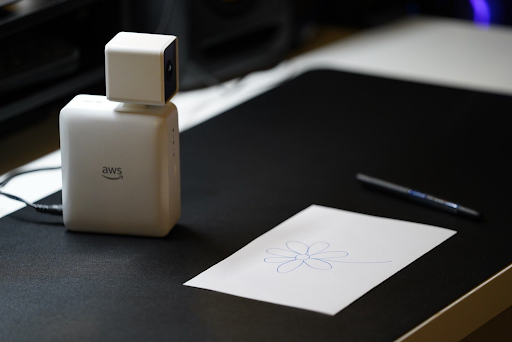

Welcome to my portfolio. Please view the info below to get to know
me better.
Intro
I graduated from the University of Washington Seattle in December
2020 with a bachelor of science degree in Electrical Engineering.
While I have spent the past few years developing imaging algorithms
for ultrasonic transducers and researching on spinal cord injury
using ultrasound imaging, I have also learned and become interested
in a lot of different skills such as data analytics, data science,
and software developing. Coding in different programming languages
and solving complex problems has always been my passion and
triggered my curiosity. Therefore, I want to pursue this exciting
tech industry as my career path, and this portfolio will signify my
commitment in this specific field.
From my previous role at Sonic Concepts Inc. as an Ultrasound
Imaging Engineer consultant, I learned how to lead a big project and
make all the decisions regarding designing, prototyping, testing,
and data collecting to present it to my client. With each decision I
made, each bug I dealt with, or each approach I used, I continued
improving my problem-solving skill and the ability to learn quickly
to deliver the best result to my clients. I also learned how to
manage my time well when I worked on my capstone project with Amazon
along with 4 other teammates, as I was a team leader and got to
distribute the work for each member and keep track of the work that
each of us did in order to deliver the best results in a timely
manner in weekly meetings. I believe that being able to use the
technical skillsets I have learned from my past experience and
integrate it with my soft skills along the way is a key to my
success story, and I will continue doing that to reach my career
goals.
Project
Guess My Drawing - AWS DeepLens with Alexa Echo Device

Guess My Drawing is an interactive drawing game between players
and an Alexa Echo device. An Amazon AWS deep-learning camera
called
DeepLens
will capture what a player draws on a whiteboard or a white paper
and inference the drawing to the most relevant object. This game
is a great way for developers who are interested in deep-learning
applications with DeepLens and exploring AWS services and how to
connect DeepLens with Alexa skills.
I led this project with 4 other teammates and reported to a
Software Engineer and a Product Manager from Amazon. I was in
charge of designing and implementing the entire Alexa voice
interface and supporting my team with imaging algorithms for
pre-processing the input data (the drawings captured by DeepLens)
to match the input data of the deep-learning model. After 6 months
of hard work, our team was able to deliver a comprehensive and
thorough project, and the project was published in the AWS
Deeplens community (link below).